| deffective = 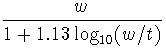, | (1) |
A two-wire transmission line with perfectly conducting wires operates in its TEM mode. The solution of Maxwell's equations for this mode can be calculated by solving the simpler 2-dimensional electrostatic problem for the surface charge density on the wires. The surface current distribution is identical to the charge distribution. Once I have the surface charge distribution, I then apply a very approximate perturbation of boundary conditions method. That is the tangential component of the magnetic field just outside the surface is proportional to the surface current at that point. If the surface is planar, the current in a good but imperfect conductor dies out exponentially with distance into the conductor. The usual skin depth gives the exponential decay rate. Obviously, near the corners, the assumption of a planar solution is incorrect. However, if the dimensions of the conductor are all large compared to the skin depth, this approximation will be reasonable since the regions where it breaks down will only contribute a small amount to the effective resistance. A true perturbation of boundary conditions method could be used to get a better approximation near the corners of the conductor, but I have not done that here. Using this simple planar approximation, the resistance per unit length of a conductor is
| 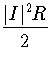 = 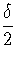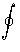d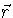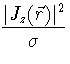 | (2) |
|
I = | (3) |
| deffective | = | 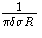 | |
| = | 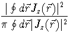 | (4) |
To calculate the charge density, I divided the
surface up into small segments and assumed the charge density was
constant over each segment. I then solved for the magnitude of the
charge on each segment by requiring the average potential on each
segment to be the same. In figures 1 and 2,
I show the calculated
charge density as a function of the distance from the edge of a square
cross section conductor.
The surface
charge density bunches at the corners. Figure 2 displays
the calculated charge density and the function
0.124x - 1/3.
The calculated charge density has the correct
x - 1/3 divergence at the corners just
like analytic theory says should be true.
| 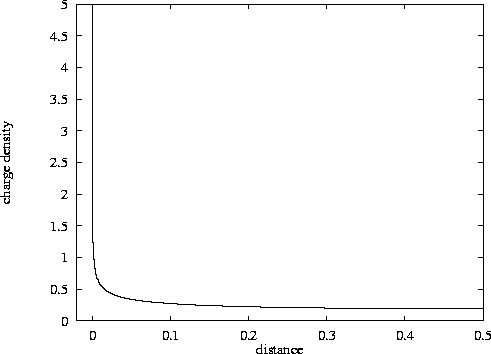 |
| 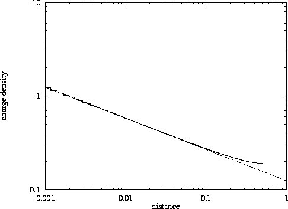 |
| w/t | deffective/w |
| 1 | 1.02 |
| 2 | 0.74 |
| 5 | 0.54 |
| 10 | 0.46 |
| 20 | 0.40 |
| 50 | 0.34 |
| 100 | 0.31 |
| 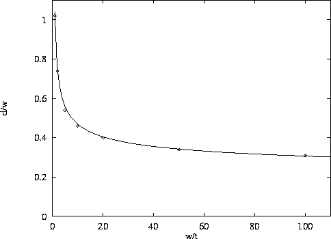 |
The microstrip conductor has width w , thickness t , just like our previous calculations. The distance from the bottom of the strip to the ground plane is h . Terman gives the following formula for the conductor loss
|
LossTerman dB/foot=7.25 x 10- 5 | (5) |
Table 2 gives a comparison of values of
 7.25 x 10- 5
from Terman and my calculations.
The loss calculation includes loss in the ground plane copper. I also
give my calculated characteristic impedance Z0 ,
and the effective diameter of the strip. This is the diameter
of an isolated circular rod with the same r.f. resistance as just the
strip conductor (not ground plane).
7.25 x 10- 5
from Terman and my calculations.
The loss calculation includes loss in the ground plane copper. I also
give my calculated characteristic impedance Z0 ,
and the effective diameter of the strip. This is the diameter
of an isolated circular rod with the same r.f. resistance as just the
strip conductor (not ground plane).
| w/h | t/h | Terman | My Value | % difference | My( Z0 ) | My( deffective ) |
| 10 | .1 | 7.25 x 10- 5 | 7.16 x 10- 5 | 1 | 28.7 | 3.55 h |
| 1 | .1 | 10.73 x 10- 5 | 9.46 x 10- 5 | 14 | 118.7 | 0.47 h |
| 10 | .01 | 7.68 x 10- 5 | 8.42 x 10- 5 | 9 | 29.0 | 2.72 h |
| 3 | .01 | 9.57 x 10- 5 | 9.90 x 10- 5 | 3 | 69.5 | 0.82 h |
| 2 | .01 | 10.37 x 10- 5 | 10.82 x 10- 5 | 4 | 88.5 | 0.56 h |
| 1 | .01 | 13.78 x 10- 5 | 13.18 x 10- 5 | 5 | 125.2 | 0.30 h |
So mostly my code agrees with Terman within 5 to 10 percent. The Terman data are old and not readily available. More modern results can be found at the link http://www.mit.edu/~mcmahill/software/mstrip/mscalc.htm It is a web based microstrip calculator. Change the input data on that web page to:
Width = 10 Length = 1000 Frequency = 30 GHz Er = 1.0001 (1 causes a problem) H = 10 Tmet = 1 Rho = 1 Rough = 0.0 Tand = 0.0 Physical Units = milsThen click on the - - - - > button. This gives the calculator the input data that corresponds to w/h = 1 , t/h = .1 .
Inputing my other values to this calculator gives Z0 values that
agree within 0.1 ohm of mine, and reasonable agreement for the
loss values. The web description claims the Z0 better than 1 percent
of the correct answer; the loss results are stated to be less
accurate but still useful. Converting Terman's and my numbers
from table 2 to the same units as the web calculator gives
the results shown in table 3.
| Width=w | H=h | Tmet=t | Calculator dB/inch | My dB/inch | Terman dB/inch |
| 100 | 10 | 1 | 0.1 | 0.103 | 0.105 |
| 10 | 10 | 1 | 0.14 | 0.137 | 0.155 |
| 100 | 10 | .1 | 0.11 | 0.122 | 0.111 |
| 30 | 10 | .1 | 0.13 | 0.143 | 0.138 |
| 20 | 10 | .1 | 0.14 | 0.156 | 0.150 |
| 10 | 10 | .1 | 0.18 | 0.190 | 0.199 |
I then used my code and allowed the height to get large. I used a piecewise constant charge density on the conductors with 100 elements along w and 50 along t , except for the infinite height values which are the well converged values given in table 1.
For h very small the current on the bottom of the strip will be nearly
uniform, and we expect d effective to go to 1/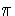 = .32
| w | t | h | deffective |
| 1 | 1 | .001 | .32 |
| 1 | 1 | .01 | .37 |
| 1 | 1 | .1 | .57 |
| 1 | 1 | 1 | .98 |
| 1 | 1 | 10 | 1.06 |
| 1 | 1 | 100 | 1.06 |
| 1 | 1 | 1.02 | |
| 1 | .1 | .001 | .32 |
| 1 | .1 | .01 | .35 |
| 1 | .1 | .1 | .44 |
| 1 | .1 | 1 | .47 |
| 1 | .1 | 10 | .47 |
| 1 | .1 | 100 | .47 |
| 1 | .1 | .46 | |
| 1 | .01 | .001 | .32 |
| 1 | .01 | .01 | .34 |
| 1 | .01 | .1 | .35 |
| 1 | .01 | 1 | .29 |
| 1 | .01 | 10 | .29 |
| 1 | .01 | 100 | .29 |
| 1 | .01 | .31 |
I also did some calculations for a ``stadium'' geometry. This is a strip with
width w and thickness t , but the edges have semicircles of diameter t so
there aren't any sharp corners and the calculation converges faster.
To be specific the cross section is a rectangle of width w - t and thickness
t , with semicircles of diameter t added to the edges.
Calculating the effective diameter of the stadium geometry gives the
results in table 5
| w/t | deffective/w |
| 1 | 1.00 |
| 2 | 0.77 |
| 5 | 0.58 |
| 10 | 0.49 |
| 20 | 0.43 |
| 50 | 0.37 |
| 100 | 0.34 |
| deffective = 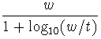 stadium geometry | (6) |
According to W6TNS on his Web page
http://www.gate.net/~donstone/aea.html
,
the AEA Iso-loop has w =1.5 inches, t =.063 inches, which if you believe my
numbers has an r.f. resistance equivalent to about 0.6 inch diameter
tubing. The MFJ-1786 loop has a 1.05 inch diameter round conductor according
to an MFJ advertisement in QST.